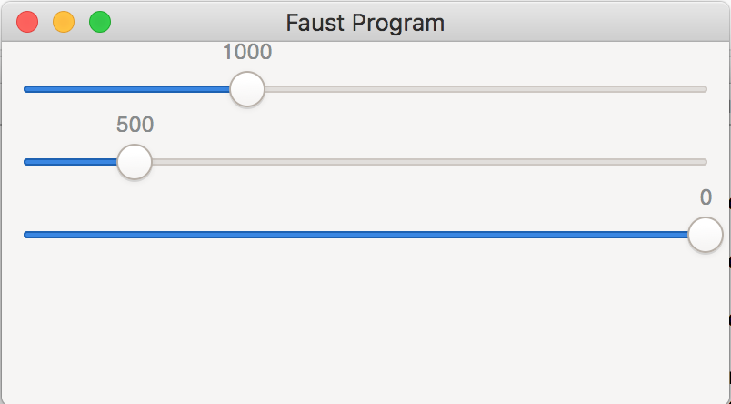
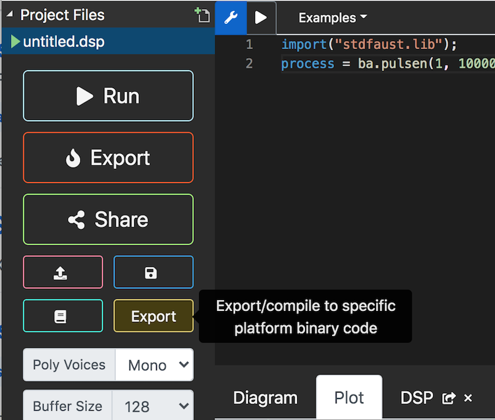
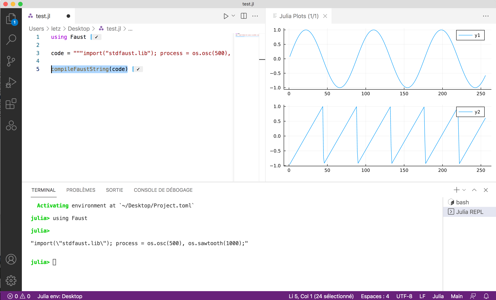

Using Faust in Julia
In this tutorial, we present how Faust can be used in Julia, a high-level, high-performance, dynamic programming language. While it is a general-purpose language and can be used to write any application, many of its features are well suited for numerical analysis and computational science.
An integration of the libfaust compiler in Julia has been firstly developed by Cora Johnson-Roberson, and will be covered by the last section of the tutorial. Then a Julia backend has been added in a second step in the Faust compiler. It allows to generate ready to use Julia code from any Faust DSP program.
Who is this tutorial for?
The first section assumes a working Faust compiler installed on the machine, so is more designed for regular Faust users. The second section and third section are better suited for Julia users who want to discover Faust.
Installing the required packages
Be sure to have the julia command available in your PATH, as explained here. With a fresh Julia install, all required packages are decribed in the packages.jl file:
- in case you have an installed Faust version, it can be installed with the
julia packages.jlcommand done in thearchitecture/juliafolder of the Faust repository - of directly downloaded, and executed with the
julia packages.jlcommand
Using command line tools
Generating Julia code
Assuming you've compiled and installed the faust compiler from the master-dev branch, starting from the following DSP osc.dsp program:
The Julia code can be generated using:
faust -lang julia osc.dsp -o osc.jl
This will generate a mydsp{T} data structure, as a subtype of the abstract type dsp, with a set of methods to manipulate it. The generated API simply follows the one defined for the base dsp type. This API basically mimics the one defined for the C++ backend.
The resulting file is not self-contained and so cannot be directly compiled using the julia program:
julia osc.jl
ERROR: LoadError: UndefVarError: dsp not defined
...
Some additional types like FAUSTFLOAT, dsp, Meta and UI have to be defined in a so-called architecture files. The Julia specific ones are described here. A simple one named minimal.jl can be used for that with the following command:
faust -lang julia osc.dsp -a julia/minimal.jl -o osc.jl
Now the resulting foo.jl file is self-contained and can be executed with:
julia -i osc.jl (here -i to stay in interactive mode)
Which compiles the Julia code, executes it and produces:
Application name: osc
getNumInputs: 0
getNumOutputs: 2
Path/UIZone dictionary: Dict{String, UIZone}("/Oscillator/volume" => UIZone(:fHslider0, 0.0f0, -96.0f0, 0.0f0, 0.1f0), "/Oscillator/freq2" => UIZone(:fHslider2, 1000.0f0, 20.0f0, 3000.0f0, 1.0f0), "/Oscillator/freq1" => UIZone(:fHslider1, 1000.0f0, 20.0f0, 3000.0f0, 1.0f0))
With the name of the application, the number of input/output channels, the set of controller paths with their range, and a display of the first samples of the computed outputs (using the powerful Plots.jl package), and showing here the effect of the si.smoo at the beginning of the signals:

Looking at the generated code
A mydsp{T} data structure, as a subtype of the abstract type dsp is generated, and contains the field definitions with their types, as well as a constructor initializing them:
mutable struct mydsp{T} <: dsp
fSampleRate::Int32
fConst1::T
fHslider0::FAUSTFLOAT
fConst2::T
fRec0::Vector{T}
fConst3::T
fHslider1::FAUSTFLOAT
fRec2::Vector{T}
fHslider2::FAUSTFLOAT
fRec3::Vector{T}
iVec0::Vector{Int32}
iRec1::Vector{Int32}
ftbl0mydspSIG0::Vector{T}
mydsp{T}() where {T} = begin
dsp = new{T}()
dsp.fRec0 = zeros(T, 2)
dsp.fRec2 = zeros(T, 2)
dsp.fRec3 = zeros(T, 2)
dsp.iVec0 = zeros(Int32, 2)
dsp.iRec1 = zeros(Int32, 2)
dsp.ftbl0mydspSIG0 = zeros(T, 65536)
dsp
end
end
Note that the structure is parametrized with a {T} type to be given at initialization time. The const REAL = Float32 or const REAL = Float64 line is generated depending of the -single (default), or -double option given at compilation time, and can be used for that.
Several access methods are generated:
function getNumInputs(dsp::mydsp{T}) where {T}
return Int32(0)
end
function getNumOutputs(dsp::mydsp{T}) where {T}
return Int32(2)
end
Several initialiation methods like init!, initanceInit!, instanceResetUserInterface! etc. are generated, here is one of them:
function instanceResetUserInterface!(dsp::mydsp{T}) where {T}
dsp.fHslider0 = FAUSTFLOAT(0.0f0)
dsp.fHslider1 = FAUSTFLOAT(1000.0f0)
dsp.fHslider2 = FAUSTFLOAT(200.0f0)
end
The buildUserInterface! method uses a UI subtype to build a controller, which could be a Graphical User Interface (for instance using GTK), or an OSC controller:
function buildUserInterface!(dsp::mydsp{T}, ui_interface::UI) where {T}
openVerticalBox!(ui_interface, "Oscillator")
declare!(ui_interface, :fHslider1, "unit", "Hz")
addHorizontalSlider!(ui_interface, "freq1", :fHslider1, FAUSTFLOAT(1000.0f0), FAUSTFLOAT(20.0f0), FAUSTFLOAT(3000.0f0), FAUSTFLOAT(1.0f0))
declare!(ui_interface, :fHslider2, "unit", "Hz")
addHorizontalSlider!(ui_interface, "freq2", :fHslider2, FAUSTFLOAT(500.0f0), FAUSTFLOAT(20.0f0), FAUSTFLOAT(3000.0f0), FAUSTFLOAT(1.0f0))
declare!(ui_interface, :fHslider0, "unit", "dB")
addHorizontalSlider!(ui_interface, "volume", :fHslider0, FAUSTFLOAT(0.0f0), FAUSTFLOAT(-96.0f0), FAUSTFLOAT(0.0f0), FAUSTFLOAT(0.1f0))
closeBox!(ui_interface)
end
The DSP structure fields to access are simply described with their name (actually a Symbol in Julia terminology), and can later be used with the standard setproperty! and getproperty access methods, like in the setParamValue! and getParamValuemethods written in the MapUI architecture.
And finally the compute! method that processes and input buffer with count frames to produce an output buffer:
@inbounds function compute!(dsp::mydsp, count::Int32, inputs, outputs)
output0 = @inbounds @view outputs[:, 1]
output1 = @inbounds @view outputs[:, 2]
fSlow0::Float32 = (dsp.fConst1 * pow(10.0f0, (0.0500000007f0 * Float32(dsp.fHslider0))))
fSlow1::Float32 = (dsp.fConst3 * Float32(dsp.fHslider1))
fSlow2::Float32 = (dsp.fConst3 * Float32(dsp.fHslider2))
@inbounds for i0 in 0:count-1
dsp.fRec0[1] = (fSlow0 + (dsp.fConst2 * dsp.fRec0[2]))
dsp.fRec2[1] = (fSlow1 + (dsp.fRec2[2] - floor((fSlow1 + dsp.fRec2[2]))))
output0[i0+1] = FAUSTFLOAT((dsp.fRec0[1]
* dsp.ftbl0mydspSIG0[trunc(Int32, (65536.0f0 * dsp.fRec2[1]))+1]))
dsp.fRec3[1] = (fSlow2 + (dsp.fRec3[2] - floor((fSlow2 + dsp.fRec3[2]))))
output1[i0+1] = FAUSTFLOAT((dsp.fRec0[1]
* dsp.ftbl0mydspSIG0[trunc(Int32, (65536.0f0 * dsp.fRec3[1]))+1]))
dsp.fRec0[2] = dsp.fRec0[1]
dsp.fRec2[2] = dsp.fRec2[1]
dsp.fRec3[2] = dsp.fRec3[1]
end
end
Note that not all generated methods are presented in this short presentation. Look at the generated osc.jl file to see all of them.
Using the generated code
Some globals have to be defined:
# Testing
samplerate = Int32(44100)
block_size = Int32(16)
The DSP object has to be created and initialized, here using the generated REAL type alias:
# Init DSP
my_dsp = mydsp{REAL}()
init!(my_dsp, samplerate)
His name can be extracted from the DSP metadata using the following code:
# Retrieve the application name
mutable struct NameMeta <: Meta
name::String
end
function declare!(m::NameMeta, key::String, value::String)
if (key == "name")
m.name = value;
end
end)
m = NameMeta("")
metadata!(my_dsp, m)
println("Application name: ", m.name, "\n")
The number of inputs/outputs can be printed:
println("getNumInputs: ", getNumInputs(my_dsp))
println("getNumOutputs: ", getNumOutputs(my_dsp), "\n")
Information on all controllers can be retrieved using the MapUI type:
# Create a MapUI controller
map_ui = MapUI(my_dsp)
buildUserInterface!(my_dsp, map_ui)
# Print all zones
println("Path/UIZone dictionary: ", getZoneMap(map_ui), "\n")
And finally one buffer can be processed with the following code, here giving FAUSTFLOAT as the actual type for external samples:
inputs = zeros(FAUSTFLOAT, block_size, getNumInputs(my_dsp))
outputs = zeros(FAUSTFLOAT, block_size, getNumOutputs(my_dsp))
compute!(my_dsp, block_size, inputs, outputs)
println("One computed output buffer: ", outputs)
Now the osc.jl can possibly be directly integrated in a larger project, or customized using an adapted new architecture file.
The faust2portaudiojulia tool
The Faust DSP program can be compiled and run with the more sophisticated faust2portaudiojulia tool which will render it using the PortAudio.jl package to access the audio driver, OpenSoundControl.jl package for OSC control, and GTK.jl package for the Graphical User Interface.
The faust2portaudiojulia tool use this portaudio_gtk.jl architecture file. When used the following way:
faust2portaudiojulia osc.dsp
It creates an osc.jl file that can simply be executed using:
julia osc.jl
So the stereo program generating sinewaves at 1000 Hz and 200 Hz by default is now playing, without any interface to control it.
Now using the following command:
faust2portaudiojulia -play 2 osc.dsp
Will create the osc.jl file, directly execute it using Julia, with PortAudio based audio rendering and GTK GUI (and with 2 threads needed for GTK and audio). Note that the GUI is still quite simple:

The following command:
faust2portaudiojulia -play 2 -osc osc.dsp
Will create the osc.jl file, directly execute it using Julia, with PortAudio based audio rendering and OSC control (and with 2 threads needed for OSC and audio). Now the application starts with an OSC controller running on ports 5000 and 5001:
getNumInputs: 0
getNumOutputs: 2
Dict{String, UIZone}("/Oscillator/volume" => UIZone(:fHslider0, 0.0f0, -96.0f0, 0.0f0, 0.1f0), "/Oscillator/freq2" => UIZone(:fHslider2, 500.0f0, 20.0f0, 3000.0f0, 1.0f0), "/Oscillator/freq1" => UIZone(:fHslider1, 1000.0f0, 20.0f0, 3000.0f0, 1.0f0))
Faust OSC application 'Oscillator' is running on UDP ports 5000, 5001
Direct OSC commands can be sent, as explained here. So for instance to change both channel frequencies:
oscsend localhost 5000 /Oscillator/freq1 f 400
oscsend localhost 5000 /Oscillator/freq2 f 960
You can possibly use the faust-osc-controller tool to remotely control the Julia program, with the following command:
faust-osc-controller /Oscillator -port 5001 -outport 5000 -xmit 1

And finally the faust-osc-controller tool can be automatically started along the OSC receiver with the faust2portaudiojulia -play 2 -oscc osc.dsp command.
Using the Faust Web IDE
Faust DSP program can be written, tested in the Faust Web IDE and generated as embeddable Julia code, or possibly as working audio applications.
Generating the pure Julia output
The output of the Julia backend can directly be generated using the Platform = source and Architecture = julia export options. As previously explained, the resulting file is not self-contained, but shows the code which has to be wrapped with adapted Julia architecture files.

Generating a minimal working Julia file
The Platform = julia and Architecture = julia export options allow to generate a self-contained file using the minimal.jlarchitecture, to be by started with the following command:
julia -i foo.jl (here -i to stay in interactive mode)
Generating an audio application controllable with GTK or OSC based interfaces
The Platform = julia and Architecture = portaudiojulia export options allow to generate a self-contained file using the portaudio_gtk.jlarchitecture. The following command starts the program with the GTK control interface:
julia -t 2 foo.jl -gtk
The following command starts the program with the OSC control interface, ready to receive OSC commands or controlled with the faust-osc-controller tool as previously explained:
julia -t 2 foo.jl -osc
And finally the faust-osc-controller tool can be automatically started along the OSC receiver with the following command:
julia -t 2 foo.jl -oscc
Using the Faust.jl Julia package
The Julia ecosystem contains over 4,000 packages that are registered in the General registry. A Faust.lj package initially developed by Cora Johnson-Roberson, has been forked and extended here. It allows the use of the libfaust library and the Julia Faust backend.
The Visual Studio Code application can be configurated with a Julia extension. It is a very convenient way to edit, compile and test Julia + Faust code.
Installing the forked Faust.jl package
In VS Code, you can enter the package mode. Pkg comes with a REPL. Enter the Pkg REPL by pressing ] from the Julia REPL and install the Faust package with:
pkg> add https://github.com/sletz/Faust.jl
To get back to the Julia REPL, press backspace or ^C, then load the Faust package with:
julia> using Faust
Assuming a working Julia environment is setup, the following commands can be used.
Using the libfaust compiler
# Create a DSP factory.
dsp = compile("""
import("stdfaust.lib");
freq = hslider("freq", 440, 20, 20000, 1);
gain = hslider("gain", 0.25, 0, 1, 0.001);
process = os.oscs(freq) * gain;
""")
# Initialize DSP instance and controls.
init!(dsp; block_size=1024, samplerate=48000)
# Compute one block of audio.
compute!(dsp)
By default, programs are compiled as single-precision; you can give -double or
other arguments to the compiler like so:
compile("process = _;"; name="passthrough", argv=["-double", "-vec"])
Each call to compute! will calculate block_size samples and return the
output as a matrix of (block_size, n_channels). If the program takes input,
set dsp.inputs to a (block_size, n_channels) matrix before calling compute!:
passthrough = init!(compile("process = _,_;"))
x = rand(Float32, 256, 2)
passthrough.inputs = x
@test compute!(passthrough) == x
After calling init!, any UI elements declared in your code will have their
path names and ranges available via dsp.ui.ranges.
julia> dsp.ui.ranges
Dict{String, Faust.UIRange} with 2 entries:
"/score/gain" => UIRange(0.25, 0.0, 1.0, 0.001)
"/score/freq" => UIRange(440.0, 20.0, 20000.0, 1.0)
julia> ctrl = dsp.ui.ranges["/score/freq"]; (ctrl.min, ctrl.max)
(20.0f0, 20000.0f0)
One can then set the values of these params like:
setparams!(dsp, Dict("/score/freq" => 220.0f0))
Displaying signals
Julia offers a lot of packages to display signals, for example with the following commands (coded here) to display the outputs buffers:
# Define a block of DSP code
julia> code = """import("stdfaust.lib"); process = os.osc(500), os.sawtooth(1000);"""
# Compile the DSP, compute one block of audio and display the outputs
julia> compileFaustString(code)
# Compile the DSP, with additional compiler arguments and display the outputs
julia> compileFaustString(code; argv=["-double", "-vec"])
# Compile the DSP, with a larger block_size and display the outputs
julia> compileFaustString(code; block_size=50000)
With the following result in VS code:

More sophisticated analysis can be done, like this example, or this projet to experiment using NNs in Faust.